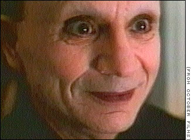

A try to demystify 'Lost Highway'

I believe I had found a coherent interpretation which allow to follow the movie without being totally lost. I believed it can give the keys necessary to make its own idea of the movie…
Lost Higway is a really good movie. You keep watching it event it seem totally obscure. This is one of the strength of David Lynch.
The first time I watched Lost Highway, I was a bit lost. Here some of explanations of Lost Highway I found on the Internet:
- Fred make a pact with the devil incarnated by the Mysterious Man,
- Mysterious Man is a video camera,
- Just the first part of the story is real. The rest is in the Fred’s imagination,
and I don’t speak about many point of view found in forums.
I finished to find two good site talking about this movie. But none of them still totally convinced me:
- the first is mediacircus,
- the second which state almost the same interpretation about the movie and explain with even more details is on jasonweb
Nonetheless, this movie must be watched knowing you’ll cannot resolve the solution. At his best you’ll can suggest an interpretation close to the one of David Lynch.
I believe I had found a coherent interpretation which allow to follow the movie without being totally lost. I believed it can give the keys necessary to make its own idea of the movie.
The Rorschach test
Like the protagonist, everybody see what he want to see in this movie. It is an invitation to think. Watch this movie is a little like watch a Rorschach’s test. What do we see in it? Everybody put its own personnality in the interpretation of the movie.
- If you are mystic, you’ll see in the mysterious man a devil,
- If you are more psychanalytics, you’ll see an inconscient part of the protagonist…
Generally, we stay in this movie and we fail explaining everything. There is almost always a point that don’t fit within the interpretation of the movie. This is why trying to find a unique good interpretation of this movie is a mistake.
Interprétation ≠ Explanation
I give an interpretation and not an explanation. Just to tell my vision of the movie should be very different from yours. There is certainly many coherent explanations.
I write this post because I believe I had found an interpretation which seems coherent for most of the movie.
kind: article menupriority: 1 published: 2009-08-04 title: A try to demystify ‘Lost Highway’ author: Yann Esposito authoruri: yannesposito.com subtitle: Movie’s keys —–
Movie’s keys
In a first, it is clear for me, it is not a fantastic movie. If you follow this line, you’ll face many problem explaining some scenes.
My hypothesis is the movie describe the Fred’s representation of reality. Each of his tries to escape reality will fail.
Fred had commited an horrible act, a murder, and try to repair his memory to accepts it. He’ll then create alternative realities.
- In a first time he kills his wife (Renee) because he believes she cheated at him.
- In the second part, he’s weaker and will be manipulated by the blond equivalent of Renee to kill Dick Laurent.
- In a third part, he kills Dick Laurent
Why this interpretation can be valid?
Because of the dialog at the begining of the movie. Cops ask Fred if he’s own a video camera:
“Do you own a video camera?”
“No, Fred hates them.”
“I like to remember things my own way.”
“What do you mean by that?”
“How I remember them, not necessarily the way they happened.”
Then, what we see is not reality but the Fred’s perception. Fred is the God of the reality we see. This is why some God/Devil interpretation of the movie works not so bad.
Who is the mysterious man?

Who’s this mysterious man? He tells Fred it’s him who invited him in his house. He’s present at the party and in the house of Fred in the same time. Eyes wide open, looking everything Fred’s doing?
It’s a key of the movie. In my humble opinion, I believe it represents the bad part of Fred. Certainly jalousy. If I was catholic, I’ll said he’s Satan. He observe, film but don’t act. He helps Fred to kill Dick Laurent. Fred had let him enter and cannot let him go. As Iago of Shakespeare is imprisonned by its own jalousy. The Mysterious Man help Fred doing the acts of violence. It also force Fred to remember the reality.
When he makes love to his wife (Renee), he sees the face of the Mysterious Man instead of his wife’s face. In reality, it’s the same person for Fred. It should be her who’s the origin of his interior badness.
| kind: article |
| menupriority: 3 |
| published: 2009-08-04 |
| title: A try to demystify ‘Lost Highway’ |
| author: Yann Esposito |
| authoruri: yannesposito.com |
| subtitle: Who’s at the origin of the video tapes? |
Who’s at the origin of the video tapes?
Certainly it’s the mysterious man (Fred himself) who makes them. Their reason should be:
- Remember the reality to Fred. From Fred point-of-view, video tapes are the reality. He tries to forget reality. But, finally, the video tapes go to the end: the murder of his wife.
It may also be a reference to pornographic video tapes, made by Renee.
kind: article menupriority: 4 published: 2009-08-04 title: A try to demystify ‘Lost Highway’ author: Yann Esposito authoruri: yannesposito.com subtitle: What really happened? —–
What really happened?
There is many possibilities here. But we have many indices. Here is a supposition.
#1 Hypothesis
The protagonist is a garagist fallen in love with a porno actress. He believe the producer is the bad guy who go again his will. Then he kills Dick Laurent.
#2 Hypothesis
He was really married, he had killed his wife. The the remorse let him create an alternate self, which live in a kind of perfect world. But after the time pass, his obsession about the murder came again. And nobody could know if he had killed Andy or not.
which one then?
The second hypothesis seems better. We can make much more interpretation with it. It explain in most part the strange phone call from Dick Laurent to Pete. But the first hypothesis remain coherent. And, we should probably make an in depth explanantion using the first hypothesis. And I’m not sure it would be better.
One of the strength of this movie is to understand there is many other coherent hypothesis. It is an expression of the Rashomon effect. Many different persons could describe in a coherent manner what they saw. But each description contradicts the others.
Conclusion
There is much to tell about this movie. But I believe I put all essential keys here. It is a proof this movie is not a random one.
I believe it is essential to remember the “test of Rorschach effet” when watching this movie.
I’d like to know or opinion ; is my interpration wrong?